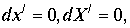

|
В. И. ЕЛИСЕЕВ ВВЕДЕНИЕ В МЕТОДЫ ТЕОРИИ
ФУНКЦИЙ ПРОСТРАНСТВЕННОГО КОМПЛЕКСНОГО ПЕРЕМЕННОГО |
|
3.4.4. Относительность времени
Л.Д.Ландау, Е.М.Лифшиц в
[14] приводят два доказательства относительности времени. Рассмотрим последовательно каждый. В течении бесконечно малого промежутка времени dt, движущиеся часы, помещенные в инерциальную систему отсчета, проходят расстояние|
(3.4.27.) |
Спрашивается, какой промежуток времени
покажут при этом движущиеся часы. Так как они покоятся в своей системе координат т.е. , то в силу инвариантности интервала, утверждают авторы, имеем равенство|
(3.4.28.) |
Откуда имеем
|
(3.4.29.) |
Но
, где есть скорость движущихся часов, поэтому (3.4.29.) записывается в виде . Интегрируя это выражение, можно получить промежуток времени, показываемый движущимися часами, если по неподвижным часам пройдет время .|
(3.4.30.) |
Рассмотрим вывод с позиций пространственной комплексной алгебры.
Инвариантность интервала предполагает постоянство скорости света С в обоих инерциальных системах отсчета. Поэтому в пространстве – времени модуль (3.4.27.) относительно скорости света и оси времени является пространственной осью, входя в интервал с отрицательным знаком. Постоянство скорости света превращает все координаты пространственные в одну координату относительно оси времени. Это выражено в преобразованиях Лоренца. Поэтому, А.Логунов ввел промежуточный параметр
, чтобы пользоваться проекциями координатных осей. В этом доказательстве вообще проекции не берутся в рассмотрение. Интервал есть модуль комплексного пространства, возведенный в квадрат., где под надо рассматривать любую комбинацию пространственного модуля типа (3.4.27.) В инерциальных системах отсчета комплексы записываются в виде
.
Равенство модулей комплексов требует равенство аргументов. Если
. Сокращение времени нет. Равенство аргументов дает равенство дробей , которое возможно при любых вариантах входящих параметров. Однако, если , то необходимо рассматривать два варианта и . Для первого случая требуется еще дополнительное ограничение  Только в этом случае будем иметь . Однако в этом случае замедление времени не происходит .Равенство дробей аргументов возможно при одной скорости
Только в этом случае будем иметь . Однако в этом случае замедление времени не происходит .Равенство дробей аргументов возможно при одной скорости  . В этом случае равенство интервалов дает , аргумент одинаков для двух систем отсчета. Если , то имеем , так как для двух систем. В этом случае интервалы взяты от делителей нуля . Так, что снова имеем
. В этом случае равенство интервалов дает , аргумент одинаков для двух систем отсчета. Если , то имеем , так как для двух систем. В этом случае интервалы взяты от делителей нуля . Так, что снова имеем  . Сокращения времени нет.
. Сокращения времени нет.
 .
.
B числителе координаты
стоит преобразование Галилея. В записи комплексной алгебры . Если  тоИ дальнейшие операции в доказательстве проводятся при
Поэтому сокращение времени огтсутствует. По условиям вывода формулы .Из левых частей последних равенств составим комплекс
|
(3.4.31.) |
Правая часть координатной матрицы дает
|
(3.4.32.) |
Приравняем равенства и проанализируем соотношения комплексов
|
(3.4.33.) |
Приравнивая модули комплексов, получим равенство
, в полном соответствии теории относительности. Однако это соотношение выведено при Поэтому остается в силе Замедление времени отсутствует. Выявленное противоречие требует рассмотреть вывод преобразований Лоренца и рассмотреть при этом условия вывода замедления времени и изменения длинны. Повторяя А.А. Логунова , возьмем выражение интервала в галилеевой системе координат|
|
(3.4.34.) |
И совершим преобразования Галилея
|
(3.4.35.) |
Обратные преобразования имеют вид
|
(3.4.36.) |
-галилеевы координаты. Взяв дифференциалы от обеих частей равенства 3.4.36, и подставив, в выражение для интервала (3.4.34.) получим
|
(3.4.37.) |
В выражении (3.4.37.) выделим полный квадрат
|
(3.4.38.) |
Введем новое время и новые координаты
|
(3.4.39.) |
|
|
(3.4.40.) |
Тогда имеем интервал
|
(3.4.41.) |
Подставляя выражения (3.4.35.) в (3.4.39.) и (3.4.40.), получим хорошо известные преобразования Лоренца
|
(3.4.42.) |
В координате
числитель дроби представляет преобразование Галилея (3.4.35.), которое по условию вывода соотношения по сокращению времени должно равняться нулю, откуда . При этих условиях интервал (3.4.41.) переходит в выражение , так как Если , то полученное выражение интервала равно (3.4.41.) и равно (3.4.34.). Это равенство возможно только приМини оглавление:
[0], [1.1.1, 1.1.2, 1.1.3, 1.1.4, 1.1.5, 1.1.6, 1.1.7, 1.1.8, 1.2, 1.2.1, 1.2.2, 1.2.2.a, 1.2.2.b, 1.2.2.c, 1.2.2.d, 1.2.2.e, 1.2.2.f, 1.2.2.g, 1.2.2.h, 1.2.3, 1.3.1, 1.3.2, 1.3.3, 1.3.4, 1.3.5, 1.3.6, 1.4.1, 1.4.2, 1.5, 1.6, 1.7.1, 1.7.2, 1.7.3.1, 1.7.3.2, 1.7.3.3, 1.7.4.1, 1.7.4.2, 1.8.1], [2.1, 2.2],[3.1, 3.2, 3.3, 3.4.1, 3.4.2, 3.4.3, 3.4.4, 3.4.5],[4.1, 4.2, 4.3, 4.4],[5.1, 5.1.Рис.52, 5.2, 5.3, 5.4, 5.4.Т1, 5.4.Т2, 5.4.Т3, 5.5.1, 5.5.2, 5.5.3, 5.5.4],[6.1.1, 6.1.2, 6.2.1, 6.2.2, 6.2.3, 6.2.4, 6.2.5, 6.3, 6.4.1, 6.4.2, 6.5.1, 6.5.2],[7.1, 7.2, 7.3, 7.4, 7.5, 7.6, 7.7.1, 7.7.2, 7.8.1, 7.8.2, 7.8.3, 7.9],[8.1, 8.2.1, 8.2.2, 8.3, 8.4, 8.5, 8.6, 8.6.T1, 8.7, 8.8.1, 8.8.2, 8.8.3, 8.9.1, 8.9.2, 8.9.3, 8.10, 8.10.T2, 8.10.T3],[9.1, 9.2, 9.3, Рис.88, 89, 90, 91, 92, 93, 94, 95, 96, 97, 98, 99, 100],[10.1, 10.2, 10.3, 10.4, 10.5, 10.6, 10.7, 10.8, 10.9, 10.10, 10.11, 10.12, 10.13, 10.14, 10.15.1, 10.15.2, 10.16.1, 10.16.2, 10.17, 10.18],[11]
Размещенный материал является электронной версией книги: © В.И.Елисеев, "Введение в методы теории функций пространственного комплексного переменного", изданной Центром научно-технического творчества молодежи Алгоритм. - М.:, НИАТ. - 1990. Шифр Д7-90/83308. в каталоге Государственной публичной научно-технической библиотеки. Сайт действует с 10 августа 1998.
E-mail: mathsru@gmail.com